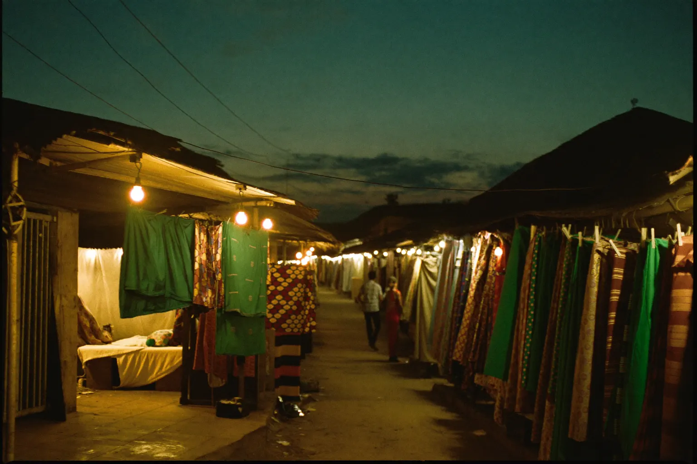
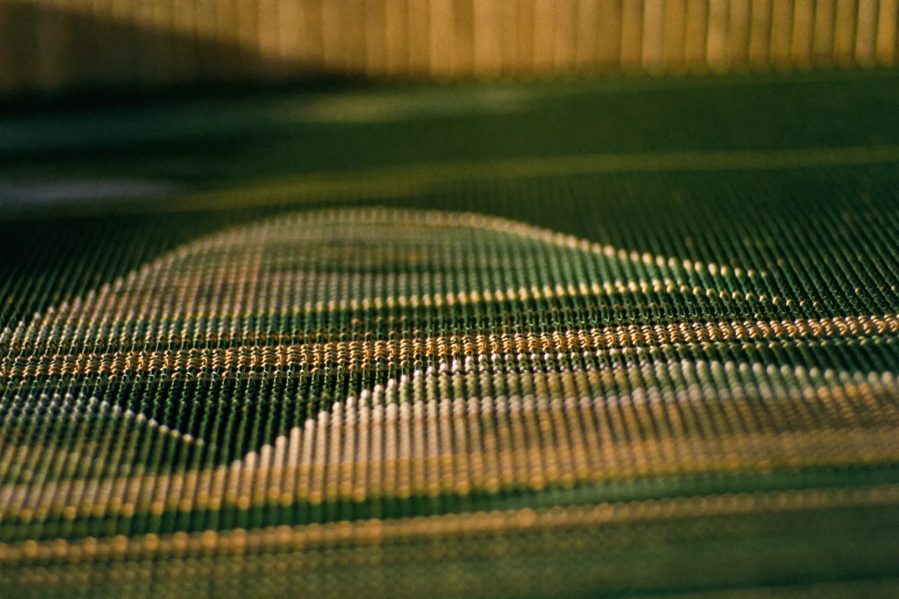
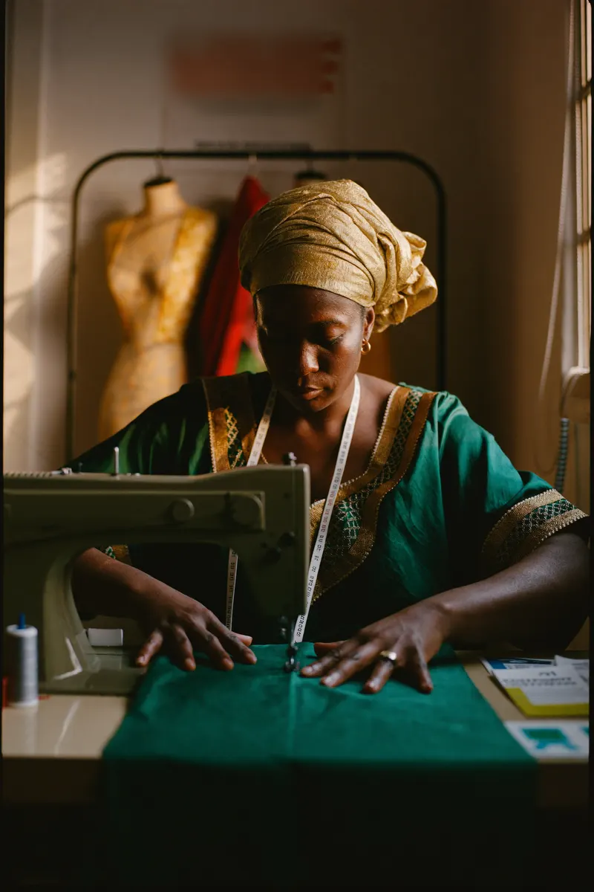
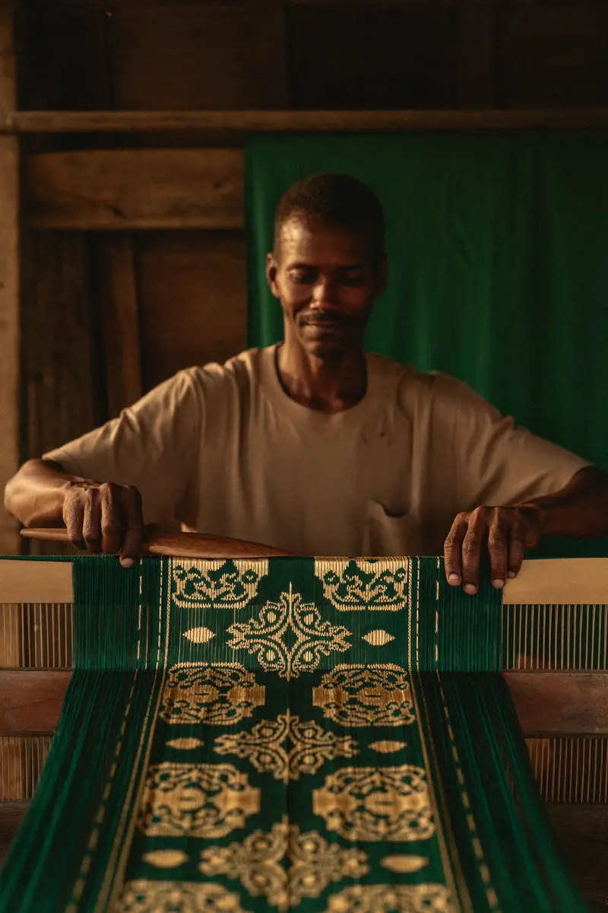
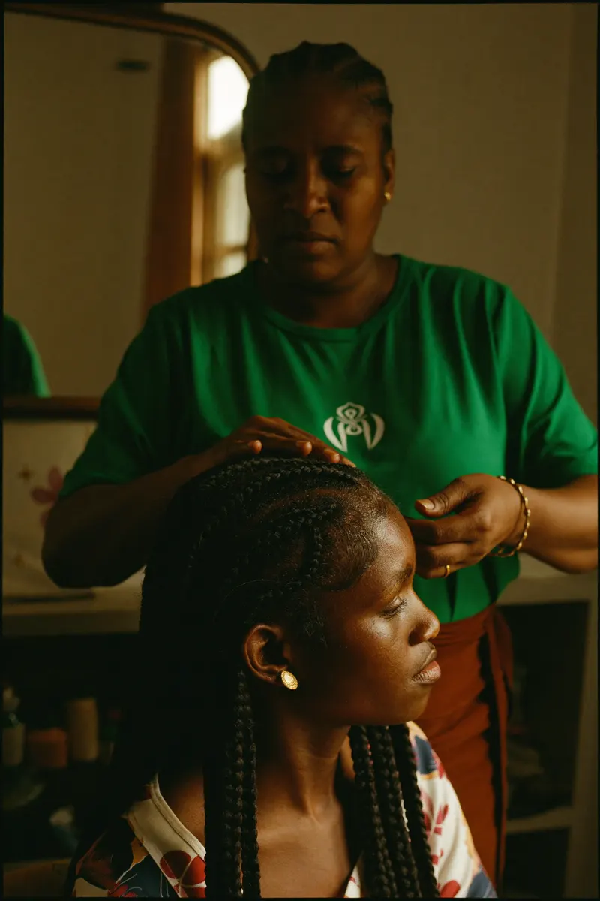
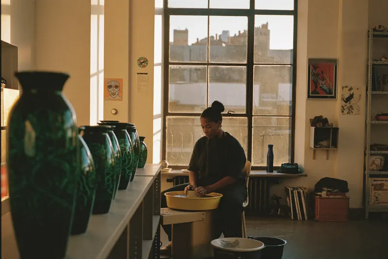

i. Customers
Every client, remembered. Measurements, preferences, birthdays, the lace she loved last Christmas — Makers keeps each customer’s story so you never start from scratch.
Makers Intelligence™ — the AI operating system for makers
Customers, orders, bookings, follow-up, content, growth — woven into one warm, intelligent system for fashion, beauty, artisan and craft businesses.
One system, six threads
Your craft already fills your day. The admin around it — remembering, chasing, posting, counting — is what Makers takes onto the loom.
Every client, remembered. Measurements, preferences, birthdays, the lace she loved last Christmas — Makers keeps each customer’s story so you never start from scratch.
From deposit to delivery. Track each piece through cutting, sewing and finishing — and let customers see honest progress without calling you at 9pm to ask.
A calendar that guards your hands. Fittings, consultations and appointments book themselves around your making time — not through the middle of it.
The gentle nudge, sent for you. Makers notices who has gone quiet — a fitting unconfirmed, a balance unpaid — and drafts the warm message you would have sent anyway.
Your work, worth showing. Turn a finished piece into captions, product pages and WhatsApp status posts — in your voice. You approve; Makers publishes.
See what your hands earned. Plain-language numbers: best sellers, busiest seasons, who to thank. Real insight, without ever opening a spreadsheet.
The workroom view
Software for makers usually speaks the language of offices. Makers speaks yours — pieces, fittings, deposits, the customer by name.
A design illustration of the Makers workroom — drawn entirely in code, like the loom it sits on.

Origin
Makers Intelligence is designed in Accra and priced in cedis first. It is tested against real conditions — patchy data on a tro-tro, a deposit taken in cash at Makola, a customer who only ever replies on WhatsApp voice notes.
We believe the world’s best software for craft businesses will come from a place where craft is still an economy, not an aesthetic. From here, the thread runs outward.
How it works
No migrations, no consultants, no six-week setup. Makers is threaded into the way you already work.
Share your contacts, your order book — even if it’s a photo of the exercise book you keep by the machine. Makers sets the warp: customers, open orders, upcoming dates.
For the first weeks, Makers watches how you greet customers, how you price, when you like to work — and starts drafting in your voice. You correct it like an apprentice.
Follow-ups go out, bookings settle themselves, content is ready to post, and the numbers read like a friend explaining them. Your hands go back to the work only they can do.

Who it’s for
Three makers stand for thousands — in Accra and Kumasi first, and everywhere hands make things for other people.
Illustrative personas. Makers Intelligence is pre-launch — these three portraits are composites drawn from research conversations, shown to explain the design. They are not client testimonials, and their photographs are AI-generated: no real makers are depicted.

Seamstress · Osu, Accra
“December alone, I sew forty pieces. The sewing I can do in my sleep — it’s the remembering that finishes me.”
For Efe, Makers is designed to hold measurements and fitting dates, chase deposits gently, and keep her December order wall from living entirely in her head.

Kente weaver · Bonwire, Ashanti
“A cloth takes me three weeks. A buyer in London asks for photos, prices, shipping — that takes me three weeks too.”
For Yaw, Makers is designed to turn one finished cloth into a product page, quote in cedis or dollars, and answer the London messages while he stays at the loom.

Braiding studio · Adum, Kumasi
“My chair is booked solid, but my Sundays go to answering ‘are you free Saturday?’ eighty times.”
For Naana, Makers is designed to answer the Saturday question by itself, fill cancellations from her waitlist, and remind clients before their appointment — not after they miss it.

Founding maker pricing
The first two hundred founding makers lock their rate for life — and help us weave the product around real workrooms.
Pre-launch pricing — confirmed at launch; founding rates never rise.
For a maker working solo, ready to stop keeping the business in an exercise book.
GH₵160/month · ≈ $14
For a busy studio — you plus an apprentice or two, and a customer list that outgrew your memory.
GH₵380/month · ≈ $33
For an established house selling beyond Ghana — wholesale, export, a name to protect.
GH₵780/month · ≈ $68
Approximate dollar figures at time of writing, for makers who think in both. Billing is in Ghana cedis; annual billing saves two months. No plan locks your data in — it’s your business, on your loom.
The founding two hundred
We’re opening Makers Intelligence to two hundred founding makers — fashion, beauty, artisan and craft businesses, from Accra to anywhere, who want the admin off their hands and their name on the work.
Founding makers get lifetime pricing, onboarding in person in Accra and Kumasi — or over a proper video call wherever your workroom is — and a direct line to the people building this. Your craft shapes the product.
You’re on the loom. Thank you — we’ve saved your place among the founding two hundred. Expect a personal note from us, not a newsletter blast, when your invitation is ready.